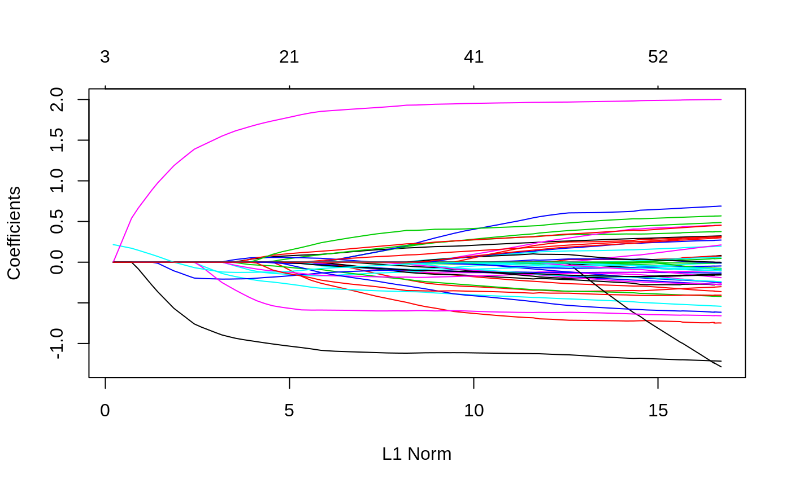

vignettes/prior-annotation-weights.Rmd
prior-annotation-weights.RmdThere may be external information that you would like to be reflected in the linear mixed model. For example, weighting variants according to their minor allele frequency. You may also want to up-weight rare variants. This can be achieved by using the penalty.factor argument in the ggmix function. This will allow you to apply a different penalty to each variable.
We use the admixed data to show how we can apply different penalties to each variable. By default, every variable gets a penalty.factor of 1, which is equivalent to applying a penalty of \(\lambda\) to each variable. A penalty.factor less than 1 will apply less of a penalty to that variable. In particular, any variable with a penalty.factor of 0 will not be penalized. Note that the lambda sequence, which is automatically calculated by the ggmix function, may change due to the different penalty.factors.
library(ggmix) data("admixed") # the default penalty factor p.fac <- rep(1, ncol(admixed$xtrain)) # set 1 of the causal SNPs to not be penalized at all p.fac[match(sample(admixed$causal, 1),colnames(admixed$xtrain))] <- 0 # supply p.fac to the penalty.factor argument res <- ggmix(x = admixed$xtrain, y = admixed$ytrain, kinship = admixed$kin_train, penalty.factor = p.fac) plot(res)

We can see from the solution path plot above, that there is 1 line that is never 0, because that variable is never penalized, and thus always remain in the model.